Routen und Markierungen
Markierungen
Markierungen sind die grundlegenden Elemente für viele Dinge wie Erzeugung von Routen, Markierung eines Fischgrunds, eines guten Ankerplatzes oder sonstigem von Interesse.
Wurde eine Markierung erzeugt, kann mit Rechts-Klick darauf dieses Kontext-Menü angezeigt werden:
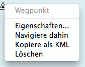
OpenCPN enthält verschiedene Symbole, die einer Markierung zugewiesen werden können. Rechts-Klick oder Verwendung des Routen-Managers aktiviert den Eigenschaften-Dialog. Dort kann u.a. aus den verfügbaren Symbolen ausgewählt werden oder andere Einstellungen für die Markierung gemacht werden.
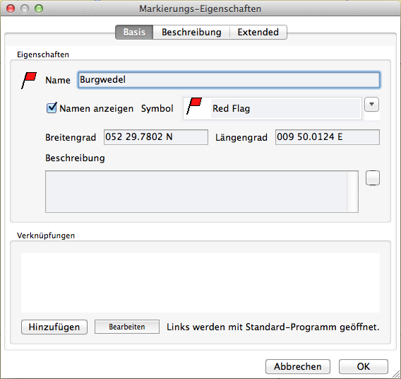
Der Anwender kann selbst eigene Symbole zur Verwendung bei Markierungen oder z.B. für das Symbol "Eigenes Schiff" zeichnen und OpenCPN hinzufügen:
- Es muß ein Verzeichnis "UserIcons" erstellt werden.
Bei Mac OS X ist ist es "/Benutzer/Anwendername/Library/Preferences/opencpn/UserIcons" in dieser OpenCPN-Version. Achtung: Unter Lion und höher ist "Library" ein verstecktes Verzeichnis. Siehe auch unter Installation. - In dieses Verzeichnis werden dann die eigenen *.xpm Dateien kopiert. Sie können eine beliebige Größe haben. Der in der *.xpm Datei eingebettete Name wird zum Namen des neuen Symbols. Die neuen Symbole erscheinen im Wegpunkt Eigenschaften Dialog und können auch importierten GPX Dateien zugewiesen werden.
- "sredna" hat ein paar nette Symbole erstellt. Download hier.
For anyone interested, I enclose a small package containg some 24x24px icons that I find usable: red buoy, red flag, red flag buoy, yellow buoy, yellow flag, yellow buoy flag, blue flag, flag. To use the archive, unpack to your UserIcons directory. WARNING: there is no folder in the zip file. Feel free to modify/copy/anything with the icons as you like. They were created using KolourPaint in case anyone wonders. - Zum Ersetzen des "Eigenes Schiff" Symbols
 kopieren Sie eine Datei mit Namen "ownship.xpm" in das UserIcons Verzeichnis.
kopieren Sie eine Datei mit Namen "ownship.xpm" in das UserIcons Verzeichnis.
Größe des Eigenes Schiff Symbols und Standort der GPS Antenne
Die Größe des Eigenes Schiff Symbols kann in der opencpn.ini Datei eingestellt werden mit diesen Zeilen unter der Rubrik [Settings]:
OwnshipLengthMeters=nn
OwnshipBeamMeters=mm
OwnshipGPSOffsetY=yy
OwnshipGPSOffsetX=xx
OwnshipMinMM=kk
mit dieser Bedeutung:
- Ist kein Wert für OwnshipMinMM angegeben, wird das eingebaute Schiff Symbol verwendet und es gibt keine Skalierung des Symbols.
- Ist ein Wert für OwnshipMinMM angegeben, wird das eingebaute Schiff Symbol verwendet und als 12 m lang entsprechend dem Zoomfaktor skaliert. Die minimale Größe wird jedoch nicht kleiner als der angegebene Wert in mm sein, in keinem Fall aber kleiner als 1 mm.
- Sind sowohl OwnshipMinMM=kk und OwnshipLengthMeters=nn angegeben, wird das eingebaute Schiff Symbol entsprechend dem Zoomfaktor als nn Meter lang skaliert.
- Wurde zusätzlich zu Regel 3 OwnshipBeamMeters=mm angegeben, wird das eingebaute Schiff Symbol entsprechend skaliert.
- Wurde ein eigenes ownship.xpm Symbol in UserIcons installiert, wird es entsprechend Regel 3 verwendet. Die Länge sollte dem eingebauten Schiff Symbol entsprechen und der Wert für OwnshipBeamMeters soll Null sein oder weggelassen werden.
- Ist die Karten Skalierung größer als 1:300.000, wird das Schiff Symbol gemäß IHO Empfehlung als rotes oder graues Ziel gezeigt.
- Der Aufstellungsort der GPS Antenne kann mit OwnshipGPSOffsetY=yy und OwnshipGPSOffsetX=xx angegeben werden, wobei yy der Wert in Metern vom Bug ist (Grundwert ist halbe Schiffslänge) und xx der Wert von der Schiffsmittellinie ist (positive Werte nach Steuerbord, Grundwert ist Null).
Außer bei Routen mit einem Diamand-Symbol wird standardmäßig ein Dreieck-Symbol erzeugt. Man kann dies Standard Symbol in der opencpn.ini Datei ändern, in dem dort unter der Rubrik [Settings/Others] der Wert für DefaultWPIcon entsprechend geändert wird. Erlaubt sind die Bezeichnungen der eingebauten Symbole wie empty, airplane, anchorage, anchor, boarding, boundary, bouy1, bouy2, campfire, camping, coral, fishhaven, fishing, fish, floating, food, fuel, greenlite, kelp, light, light1, litevessel, mooring, oilbouy, platform, redgreenlite, redlite, rock1, rock2, sand, scuba, shoal, snag, square, triangle, diamond, circle, wreck1, wreck2, xmblue, xmblue_, xmgreen, xmgreen_, xmred, xmred_, activepoint und auch die Bezeichnungen eigener "UserIcons" ohne deren Endung .xpm.
Rechts-Klick irgendwo in die Karte und Auswahl "Neue Markierung" erzeugt eine Markierung. Die Markierung erhält ein dreieckiges Symbol, das mit Rechts-Klick und Auswahl "Eigenschaften..." geändert werden kann.
Ferner kann eine Markierung mit der Enter- oder Leerzeichen-Taste an der augenblicklichen Bootsposition erzeugt werden.
Mit der Tastenkombination ⌘ + M wird eine
Markierung an der augenblicklichen Cursor-Position gesetzt.
Die Markierung kann mit dem Mauszeiger verschoben werden.
Bei der Erzeugung von Routen fragt OpenCPN, ob eine Markierung in der Nähe verwendet werden soll, wenn ein Routenpunkt hinzugefügt wird.
Rechts-Klick auf das Symbol und Auswahl "Löschen" löscht es. Markierungen können auch mit unter der Lasche Markierungen im Routen-Manager gelöscht werden. Das Löschen einer Markierung, die Teil einer Route ist, ändert ebenfalls die Route.
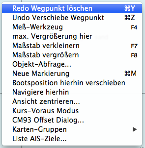
Ein gelöschter oder verschobener Wegpunkt initiiert die neuen Kontext-Menü-Einträge "Undo" und "Redo", um die Aktionen rückgängig zu machen bzw. wieder zu holen.
Die Mann über Bord Markierung kann mit dem Symbol aus der Werkzeugleiste erzeugt werden oder mit den Tasten ⌘ + Leertaste. Die Markierung sieht aus wie das Symbol und wird an der aktuellen Position erzeugt. Sie kann nicht (aus Versehen) mit dem Mauszeiger verschoben oder gelöscht werden, jedoch mit dem Routen-Manager. Mehr dazu hier.
Eine ähnliche Sperrung kann für alle Markierungen aktiviert werden. Gehe zu Einstellungen, Oberfläche.
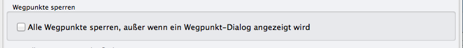
und mache dort den Haken gegen ein versehentliches Verschieben. Man aktiviert das für Unterwegs und deaktiviert es zur Planung.
Gehe zu Position...
im Rechts-Klick Menü bringt ein kleines Dialog-Fenster zur Eingabe von Länge und Breite. Mit "OK" wird die Anzeige dann an dieser Position zentriert unter
Beibehaltung der Skalierung. Der eingegebene Wert bleibt für die Sitzung erhalten, aber nicht beim Neustart von OpenCPN.
Erweiterte Möglichkeiten bei Markierungen
Markierungen lassen sich auch zur Hinterlegung von Informationen im fast beliebigen Format (PDF, Bilder, Internet-Links etc.) nutzen. Siehe dazu im
Abschnitt Erweiterte Markierungen.
Routen
Mit diesem Symbol wird eine Route erzeugt. Angeklickt ändert sich der Cursor zu ( ) einem Stift. Klicken Sie mit links entlang der Route, die gemacht werden soll. Das hinterläßt sequentielle Wegpunkte beim Links-Klick. Die Nummern erscheinen nur in der Route im Routen-Manager und sind nicht auf der Karte sichtbar. Die Gesamt-Entfernung der Route wird am Stift angezeigt zusammen mit dem Kurs vom letzten markierten Wegpunkt. Beim Erzeugen einer Route fragt das Programm, ob ein in der Nähe liegender, schon bestehender Wegpunkt in die Route einbezogen werden soll.
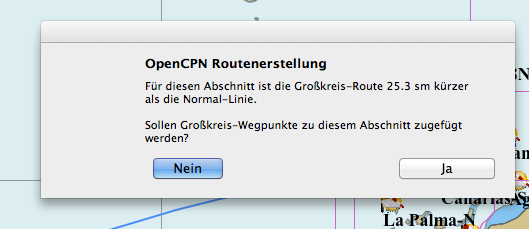
Bei größeren Entfernungen und insbesondere bei Ost-West-Richtung in höheren Breiten fragt OpenCPN, ob eine Großkreis-Berechnung erfolgen soll.
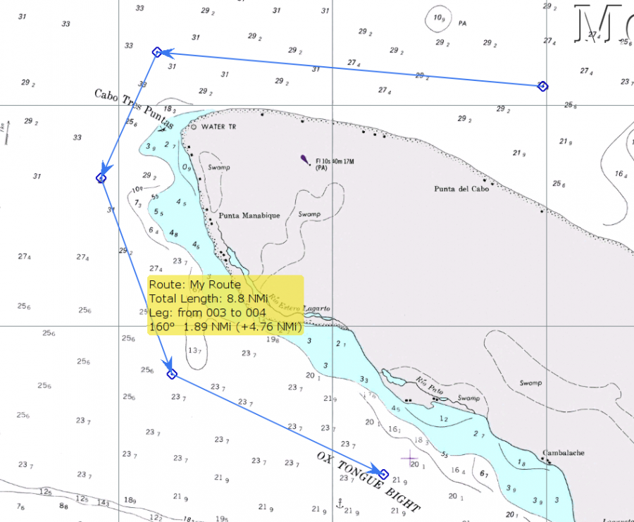
Befindet sich der Cursor über der Route, erscheint eine Kurzübersicht mit dem Namen der Route, wenn in den Eigenschaften gesetzt, der Gesamtlänge der Route, Kurs und Entfernung des Abschnitts unter dem Cursors und der Entfernung vom ersten Wegpunkt der Route. Im obigen Beispiel ist die Gesamt-Entfernung 8,8 sm, der dritte Abschnitt ist 1,89 sm mit Kurs 160 Grad und die beiden ersten Abschnitte waren 4,76 sm.
Wenn die gewünschte Route den Bereich der aktuell angezeigten Karte überschreitet, bewegen Sie den Cursor in den gewünschten Bereich. Sie können mit dem Scroll-Rad oder den +/- Tasten der Tastatur ein- und aus-zoomen bei der Erzeugung der Route. Sie können auch Rechts klicken und 'max. Vergrößerung hier' oder 'Maßstab vergrößern' bei der Routen-Erzeugen wählen. Zum Beenden Rechts-Klick und Auswahl Ende Route vom Kontext-Menü, alternativ die Esc Taste.
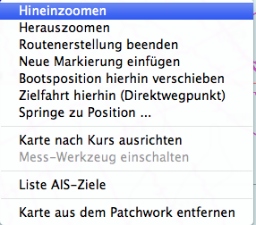
Das Rechts-Klick Menü ist kontext sensitiv. Was dort enthalten ist, hängt von der Kartenart, dem "Quilting" oder anderen Dingen ab.
Sie sollten jetzt eine inaktive (blaue) Route haben. Aktive Routen sind rot, inaktive blau.
Mit Rechts-Klick auf eine Route erscheint ein Menü mit vielen Alternativen wie "Wegpunkt einfügen" und "Wegpunkt anhängen" usw.
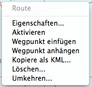
Mehrere Routen
OpenCPN kann mehrere Routen auf verschiedene Weise behandeln. Es können mehrere Routen in einer Sitzung erzeugt werden oder in eine Sitzung importiert werden. Die Sichtbarkeit jeder Route wird vom Routen-Manager kontrolliert. Links gibt es ein "Auge" bei jeder Zeile einer Route. Dieses funktioniert wie ein Schalter. Damit kann dann nur die jeweilig gewünschte Route zur Anzeige gebracht werden.
Ein anderer Weg ist das Erzeugen und Exportieren von Routen, um sie später zur Verwendung wieder zu importieren.
Um die Karte von nützlichen, aber nicht benötigten Routen zu bereinigen, befolgen Sie diese Schritte:
Um die Wegpunkte los zu werden, die auf der Karte bleiben, wenn eine Route importiert und dann gelöscht wurde (möglich bei importierten GPX Dateien):
- Öffnen der Lasche Wegpunkte im Routen-Manager und Auswahl 'Lösche alle Wegpunkte'.
- Bestätigen der Sicherheitsabfrage.
- Rechts-Klick auf die Routen Linie und Auswahl 'Lösche Route' oder in Lasche Routen des Routen-Managers 'Lösche alle Routen'.
- Bestätigen der Sicherheitsabfrage.
Speichern und Laden von Routen und Markierungen
Aktivierung und Verwendung von Routen
Rechts-Klick auf den Track ändert die Farbe von blau auf orange und öffnet ein Kontext-Menü.
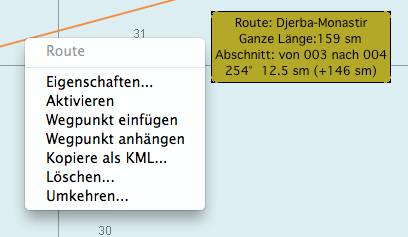
Klick auf "Aktivieren" oder mit der gleichen Funktion im Routen Manager ändert die Routen Farbe auf rot und es erscheint ein neues Routen Informations Fenster auf der rechten Seite des Bildschirms:
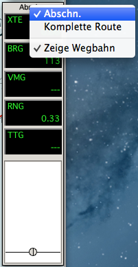
Dieses Fenster hat ebenfalls ein Kontext-Menü, mit entweder der Abschnitt oder die Gesamt-Route eingestellt werden kann sowie auch die Bahnanzeige an- oder abgeschaltet wird:
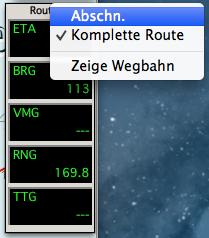
Ist eine Route aktiviert, gibt es die Auswahl "Deaktivieren" in den verschiedenen Menüs.
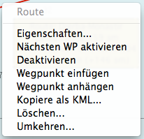
Rechts-Klick auf einen Wegpunkt einer Route aktiviert einige Optionen, wenn verfügbar.
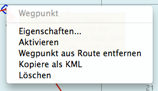
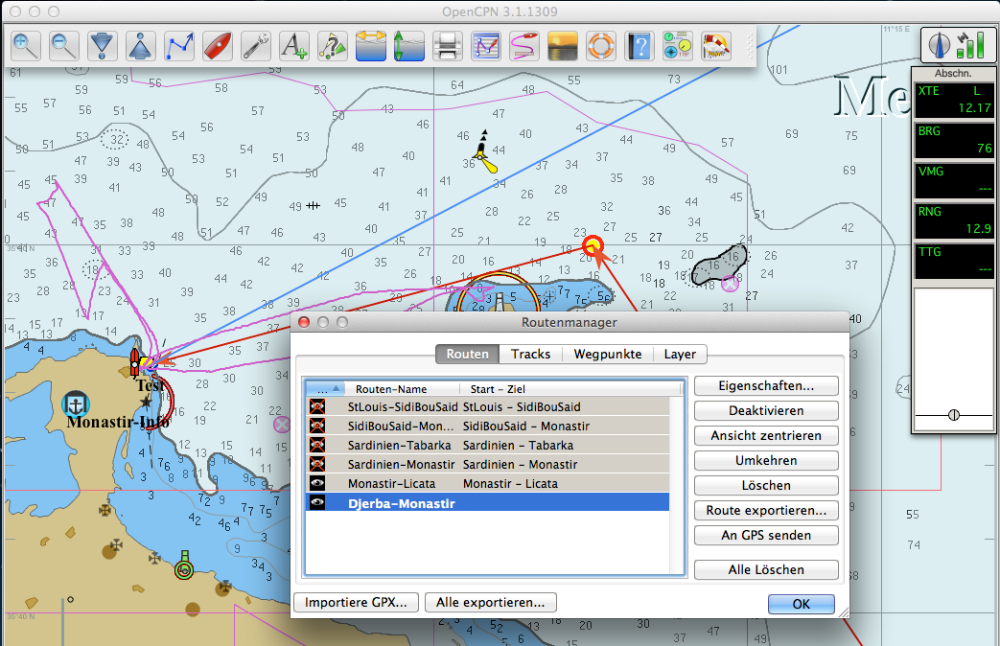
| 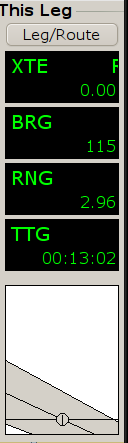 | XTE Track Fehler. Wie weit Ihr Boot vom Kurs entfernt ist. BRG Richtung zum nächsten Wegpunkt. RNG Entfernung zum nächsten Wegpunkt. TTG Fahrtzeit zum nächsten Wegpunkt. Grafische Illustration zu den obigen Werten. Betrachten Sie es wie eine Autofahrt auf der Straße. |
Die Ansicht kann mit dem Kontext-Menü konfiguriert werden, siehe oben.
Autopiloten und Routen
Wurde unter Optionen/Verbindungen ein Autopilot-Ausgang konfiguriert, sendet OpenCPN Befehle an den Autopiloten, wenn eine Route aktiv ist. OpenCPN erzeugt und sendet NMEA RMC Daten an den Autopiloten-Ausgangsport bei aktivierter Route, siehe unter Einstellungen. OpenCPN wechselt automatisch zum nächsten Wegpunkt der Route bei einem Ankunftskreis von 0,05 Seemeilen (= 92.6 m). Das geschieht automatisch und kann nicht vom Anwender eingestellt werden oder ist Signal-abhängig. Das funktioniert im Algemeinen gut. Der Autopilot beobachtet die RMB Sequenzen. Sieht er eine neue Ziel-Breite-Länge und eine neue Steuer-Richtung, dann fragt er den Anwender zur Bestätigung des Richtungswechsels. Raytheon und Autohelm arbeiten auf diese Weise.